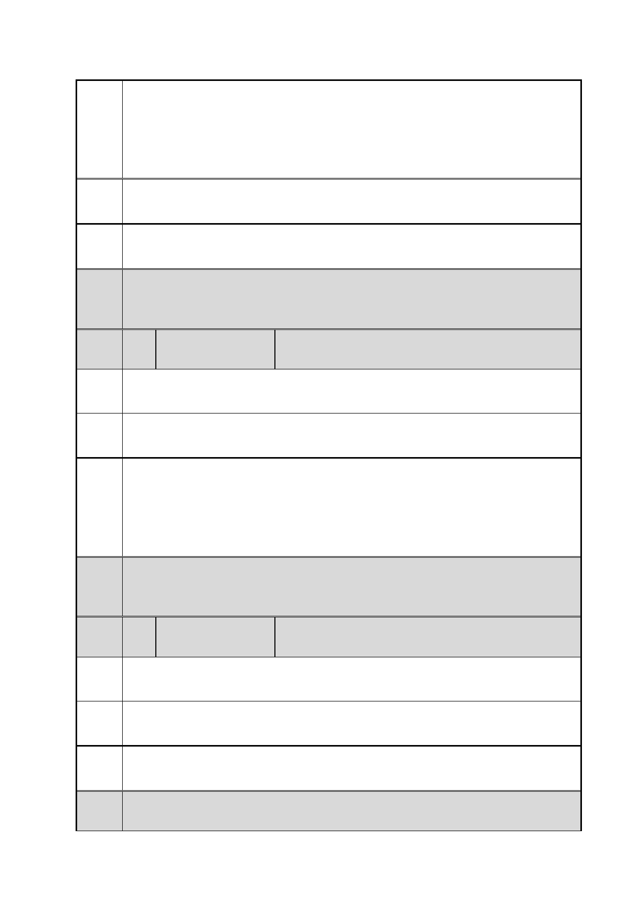

臺北市都市計畫委員會 公民或團體陳情意見綜理表
案
名
建議
辦法
「變更臺北市信義區逸仙段二小段 33 地號等 21 筆土地（原臺北機廠）
工業區為創意文化專用區、特定專用區、道路及綠地用地主要計畫案」
及「擬定臺北市信義區逸仙段二小段 33 地號等 21 筆土地（原臺北機
廠）創意文化專用區、特定專用區、道路及綠地用地細部計畫暨劃定
都市更新地區計畫案」
臺北機廠都更後，將 52 弄單號這邊房屋區，改成一般住宅區。
市府 同編號 16 市府回應內容。
回應
委員
會議
決議
編
號
陳情
理由
建議
辦法
內容同編號 1。
18 陳情人
程序有問題。
請召開聽證會。
林○妙
市府
回應
委員
會議
決議
編
號
陳情
理由
本計畫自 103 年 11 月 27 日公告公開展覽 30 天，並於 103 年 12 月
10、11 日舉辦公開展覽說明會向民眾說明計畫內容，說明會之日期
及地點均登報周知（102 年 11 月 28 日聯合報北市版、102 年 11 月
29 日中國時報北市版），符合都市計畫法第 19 條規定，並無程序問
題。
內容同編號 1。
19 陳情人
同說明會所提意見
宋○永
建議
辦法
市府 說明會民眾發言時並無登記姓名，無法查考宋先生於說明會之發言內
回應 容。
委員
會議
內容同編號 1。
第 29 頁/共 154 頁